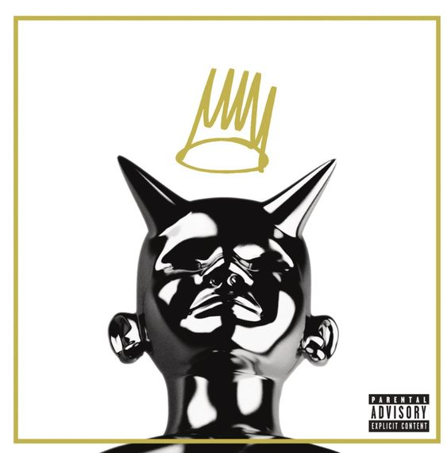
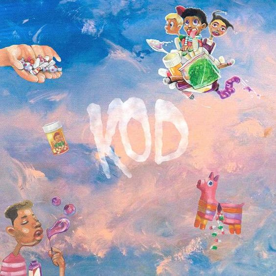

My Favorite J. Cole Lyrics
J.Cole's lyrics and story telling through his music is part of the reason why I believe that he is one of the best artists of this generation. Through his earnest storytelling, as he describes events and issues that he truly cares about, listeners develop a more intense connection with both Cole and the song itself simply for the emotions he evokes.
- “To appreciate the sun, you gotta know what rain is.”
- “Anything’s possible, you gotta dream like you never seen obstacles.” – J Cole
- “Take a chance, because you never know how perfect something can turn out.” – J Cole
- “I’d rather be happy being myself than sad trying to please everyone else.” – J Cole
- “I’m here to spread a message of hope. Follow your heart. Don’t follow what you’ve been told you’re supposed to do.”
- “Always gon’ be a whip that’s better than the one you got, always gon’ be some clothes that’s fresher than the ones you rock, always gon’ be a girl that’s badder out there on the tours, but you ain’t never gon’ be happy ‘til you love yours”
- “Things change, rearrange, or so do I/ It ain’t always for the better, dawg, I can’t lie/ I get high ’cause the lows can be so cold/ I might bend a little bit but I don’t fold.”
His Albums
Cole has released six studio albums, one live album, four compilation albums, three extended plays, three mixtapes, 58 singles (including 22 as a featured artist), two promotional singles and twenty one music videos.
Here are some of my recomendations off of each of his albums...
2014 Forest Hills Drive
- Love Yourz
- 03'Adolescence
- Apparently
- A Tale of 2 Citiez
- January 28th
For Your Eyez Only
- For Whom the Bell Tolls
- Change
- Ville Mentality
- Neighbors
- Foldin Clothes

Born Sinners
- Land of Sankes
- Power Trip
- Sparks Will Fly
- Let Nas Down
- Crooked Smile

KOD
- Kevin’s Heart
- KOD
- ATM
- Motiv8
- Photographs
The Off-Season
- m y. l i f e
- a m a r i
- p r i d e. i s. t h e. d e v i l
- 1 0 0. m i l'
- t h e. c l i m b. b a c k